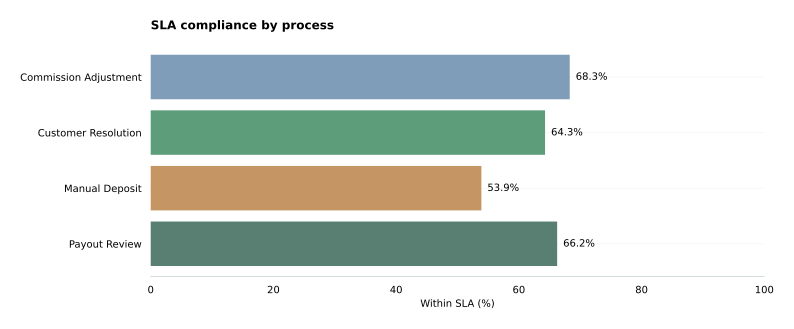

01 / Business question
Which operational workflows miss service targets, and where could reducing queue time create measurable improvements?
Operational process mining at case level: understand waiting time, handling time, SLA breaches and where redesign could improve service.
02 / Analytical approach
- Generate a case-level event history for manual deposits, payouts, commission adjustment and customer resolution.
- Separate waiting time, active handling, rework and workflow-specific SLA targets.
- Calculate compliance and bottleneck metrics by process.
- Run an explicit 20% queue-time reduction what-if scenario and state the limitations.
03 / Results from generated data
Across 2,250 simulated cases, SLA compliance is 61.6% and average queue time is 10.0 minutes. If queue time fell by 20% without other changes, the simulated compliance rate would be 69.8%, or 8.22 percentage points higher. This is a counterfactual, not an observed improvement.

04 / Recommended actions
- Map hand-offs, approvals and ambiguous ownership.
- Introduce timestamped sub-stages and monitor the share of reworked cases.
- Pilot one queue change at a time and measure before/after results.
05 / Limitations
The events and SLAs are simulated. A 20% queue reduction is an assumption, not a demonstrated result or a guaranteed benefit.